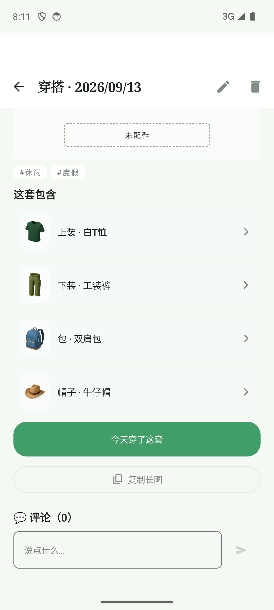
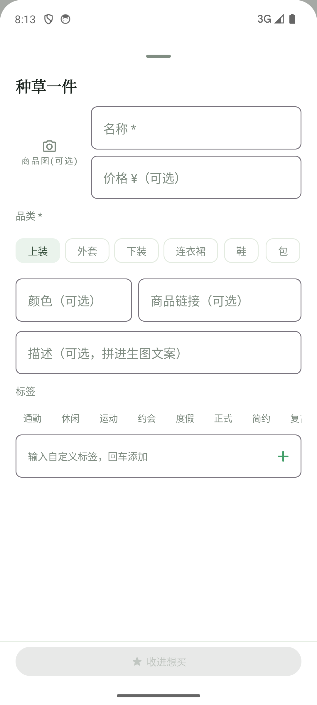
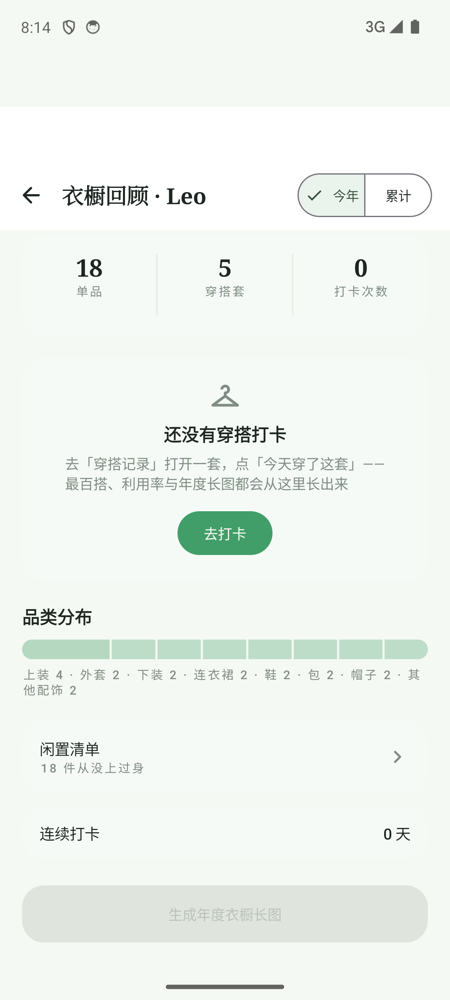

IMPLEMENTATION REVIEW
衣橱 UI 审查 · 落地验证
it-029 / it-030 / it-031 · 共性问题 C1–C10 全项复验
Leo 对 2026-09-23 衣橱 UI 审查报告拍板「实施」后，三个迭代分批落地：止血（P0 崩溃 / 评论删除确认 / 导航弹层色阶）、去 emoji 与实体名衬线纪律、版式收拢（W1 名称条 / W8 翻页器 / W10 吸底动作栏 / W7 按钮层级 / W9 空态行动）。本报告为逐项模拟器复验记录：C1–C10 全部通过，构建与单测绿，证据截图为最新构建实机采集。
日期 2026-09-23范围 3 迭代 · 10 项共性问题 · 6 页复验
提交 df6ffba → 605d83b → 90c2387
01总览 · C1–C10 落地复验表
全项通过
三个迭代对应审查报告的三组问题；每项以模拟器实测（uiautomator dump / logcat）、截图对照或源码核对复验。✓ = 验收通过；备注列记录口径勘定与保留项。
| # | 迭代 | 落地内容 | 复验方式 | 结果 |
|---|
| C1 | it-029 止血 | 混入心愿关闭时 pager 页码回卷，items[page] 不再越界（P0） | 愿望卡在场开关混入、格位增删来回走查 | ✓ FATAL=0 |
| C8 | it-029 止血 | 评论删除出「删除这条评论？」确认对话框（§5.7 红线回正） | 实测：确认后 评论（1）→（0），取消不动 | ✓ |
| C2 | it-029 止血 | surfaceContainer 五档覆盖，导航/弹层紫灰 → 纸感家族 | 浅色走查目视正常；深色为 token 级等比替换 | ✓ 备注 1 |
| C3 | it-030 字体/图标 | 功能图标 emoji → Material Icons；文本提示语 emoji 清零（含补遗 6 处） | 截图核对 + 全仓字符串字面量扫描清零 | ✓ 备注 2 |
| C4 | it-030 字体/图标 | 衣物卡 / 心愿卡 / 穿搭卡实体名统一衬线 Title（单行省略） | 截图核对（记录页 / 回顾页 / 衣橱卡） | ✓ |
| C5 | it-031 版式 | W1 名称条名称优先 + 纯 n/n 角标（可点翻页）+ 12dp 间距 | 实测：全名无截断；点角标 2/2→1/2 不进详情 | ✓ 勘定见 05 |
| C6 | it-031 版式 | W8 翻页胶囊外置卡下方居中，两侧圆钮废止 | 截图：帽行无遮挡（现状七成被压 → 零遮挡） | ✓ |
| C7 | it-031 版式 | W7「今天穿了这套」唯一实底主按钮，复制长图降描边 | 截图核对详情页底部动作区 | ✓ |
| C9 | it-031 版式 | W10 种草表单「滚动区 + 固定动作栏」，收进想买吸底常驻 | 截图：初始视口即见主按钮（现状需滚动） | ✓ |
| C10 | it-031 版式 | W9 打卡空态卡增「去打卡」行动按钮 | 实测：点击直达穿搭记录 Tab | ✓ |
备注 1：深色档为 token 级等比替换，浅色走查目视正常，深色未单独像素采样复验。备注 2：品类 emoji chips 系 it-012 spec 决策，按审查建议留待 Leo 专项裁决，本轮不动；保留项（头像选择 emoji、it-026 的 ✓/✗ 符号分层）已在迭代文档备案理由。
spec 同步：spec 02 新增「it-029~031 交互注记」、CHANGELOG 三条、三份迭代文档「验证记录」均已回填，状态「已完成」。单测 assembleDebug + testDebugUnitTest 全绿。
02W1 搭配页 · C5 名称条复验
现状 → 落地后
窄格名称从截断 1–2 字到全名完整，品类前缀废止、序号角标由伪按钮变可点翻页，格间距断开深色长带；一屏高度未破。

审查现状截断 · 零间距 · 伪按钮
1名称优先（加粗、单行省略）：手提包 / 牛津纺衬衫 / 直筒牛仔裤全名完整显示，品类前缀废止（品类由格位 + 图片承载）
2右侧纯「n/n」序号角标改为可点循环翻页。实测点帽子位角标 2/2→1/2，不再穿透进单品详情（审查 P1 伪按钮闭环）
3相邻格间距 12dp，深色名称条不再连成长带；✕ 换 Material Close 图标（原文字 ✕ 被 fallback 全宽渲染占 32dp）
4格宽 =（行宽 − 24dp）/ 3，仅包/配饰小格系数 0.55→0.85；帽/下/鞋原比例不动，三区 + 底部动作栏一屏全显
5过程记录：rev1 曾把全部格子比例放至 1.55 解截断，顶破一屏（底部行溢出折叠线），已回退为仅放大窄格
03W8 穿搭记录 · C6 翻页器复验
现状 → 落地后
翻页胶囊从拼贴浮层移出、置于卡片下方居中，帽行从七成被压到零遮挡；两侧重复圆钮删除，保留胶囊可点 + 横滑两种翻张方式。

审查现状胶囊压帽行
1胶囊 ‹1/5› 位于卡片下方居中（红线之下、网格之上），拼贴主视觉完整无控件叠压
2it-015 修订二的「两侧 ‹ › 圆钮」废止，同屏三套翻页语义收敛为两套（胶囊 + 横滑），‹n/m› 卡序记号沿 it-011 保留
3空槽对比同步加深（BodyCollage「未配X」虚线 + ink 级文字，违 §5.8 的灰弱感消除）
4胶囊可点循环翻张，横滑保留；dump 中胶囊 clickable=true
04W7 / W10 / W9 · C7 · C9 · C10 复验
三页对照
打卡按钮层级、种草表单吸底、空态行动三个「功能在但主路径不顺」的问题一次收拢，以下均为最新构建实机截图。

W7 按钮层级C7
「今天穿了这套」为页面唯一全宽实底主按钮；「复制长图」降为描边次按钮，主次一眼可分（it-018 全宽实心回正）。

W10 吸底动作栏C9
表单区独立滚动 + 底部固定动作栏：初始视口即见「收进想买」主按钮（现状需滚动才出现、末行被截断），任何滚动位置可见可点。

W9 空态行动C10
「还没有穿搭打卡」空态卡增实底「去打卡」按钮，实测点击直达穿搭记录 Tab，空态从说明文变成入口（§5.8 回正）。
05口径勘定 · emoji 补遗 · 备案
实施过程中有三处需要留痕的判断：审查报告与线框的口径冲突、it-030 验收复核清出的漏网项、以及不改写历史的提交切分备注。
一、C5 口径勘定（报告文字 vs 线框画稿）
| 出处 | 说法 |
|---|
| 审查报告 C5 文字 | 「名称优先，品类并入右侧计数角标，杜绝截断」 |
| 改版线框画稿 | 名称条 = 名称加粗 + 纯序号「n/n」，无品类前缀（Leo 过目件） |
| 裁定 | 以线框为准。「杜绝截断」是绑定验收：rev1 实测小格名称槽 0 宽，物理上塞不下「名称 + 品类 n/n + ✕」；品类信息已由格位 + 图片承载。it-031 的 US-31a 与验收标准已按此回正，勘定全文见 it-031 验证记录。 |
二、it-030 补遗：文本提示语 emoji 清零 6 处
| 位置 | 处理 |
|---|
| Wishlist「📋 复制长图」按钮 | C3 明确点名的带文字 emoji 按钮（首轮漏项）→ Material ContentCopy 图标 + 文字，与 W7 同款 |
| W5 / W7「💬 评论（N）」标题 ×2 | 去 💬，标题纯文字（复验：评论（0）前无 emoji） |
| 数据包「📦 文件名」「⚠ N 件…」、Wishlist「🔗 域名 ↗」 | 去前缀；⚠ 的警示语义已由琥珀色 SymUpdate 承载 |
三、备案（不改写历史 / 未尽项）
| 事项 | 说明 |
|---|
| 提交切分瑕疵 | C7 / C10 两文件编辑在工作区时被 it-030 提交（605d83b）一并扫入；功能与验收不受影响，已在 it-029/031 验证记录双向备案 |
| 未实机点检项 | Wishlist「📋」按钮所在心愿穿搭弹层当前无数据（心愿穿搭 0），以编译 + 同款已验证惯用法代码复核 |
| 保留项 | 头像选择 emoji（内容选择器）、it-026 ✓/✗ 符号分层（spec 决策）、品类 emoji chips（it-012，待专项裁决） |
| 推送状态 | 本地产物含 CI 工作流变更，gh OAuth token 缺 workflow scope 暂未推送；待 gh auth refresh -s workflow 后一并上库 |